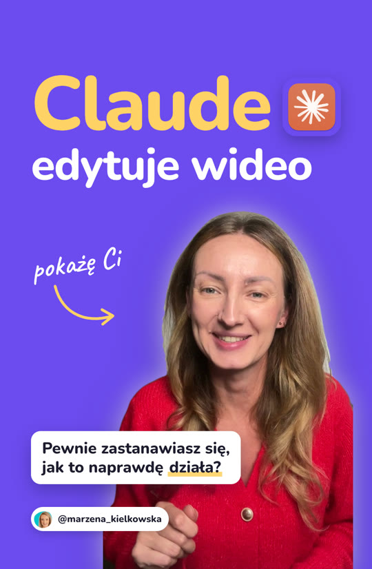
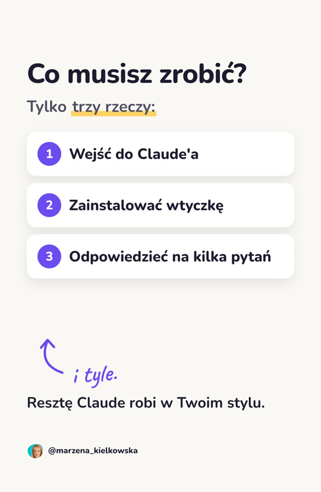
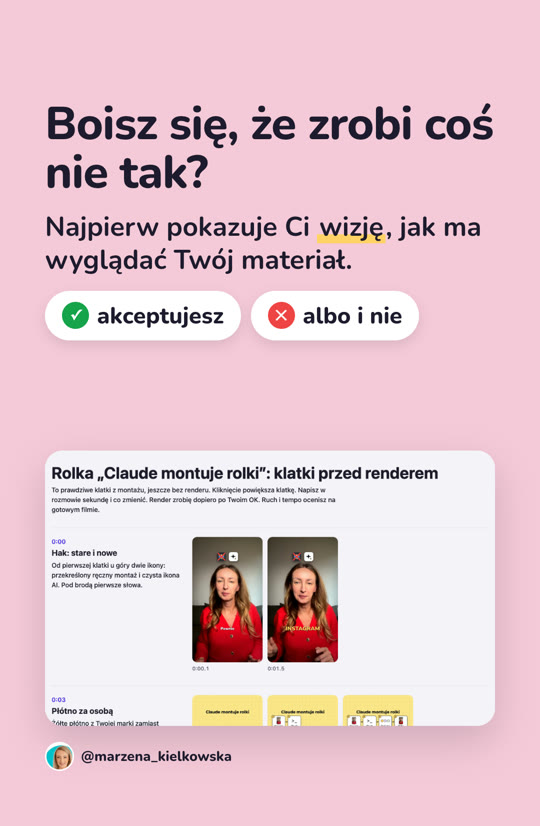
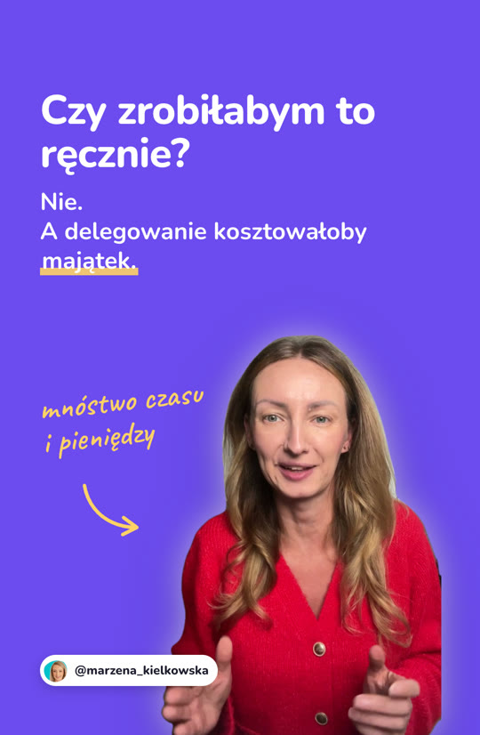
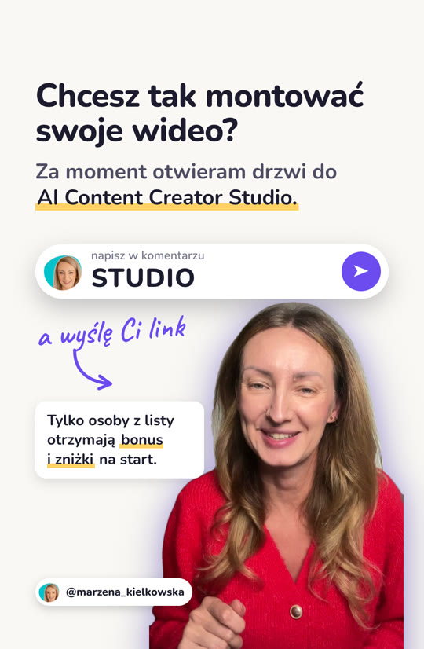

Tak wygląda karuzela zrobiona z gotowej rolki. Pod każdym slajdem jest zasada, którą pokazuje. Twoja karuzela będzie miała Twoje słowa, Twoje zdjęcia i kolory z Twojego Lookbooka.





Przesuń palcem albo myszką. Slajdy z napisem „film” są filmami bez dźwięku.
Okładka: najważniejsze słowo ogromne, od lewej, duża ikona narzędzia. Osoba z uśmiechem, wycięta z tła, z poświatą. Mała karta z pytaniem stoi niżej, z dala od brody.
Drugi hak. Instagram pokazuje ten slajd jeszcze raz osobom, które nie zareagowały na okładkę, więc u góry jest ten sam nagłówek co na okładce, a pod nim pytanie z rolki. Film bez dźwięku: trzy fragmenty rolki.
Pytanie i od razu odpowiedź. Każdy krok w jednej linii, odręczny dopisek prowadzi wzrok.
Film bez dźwięku: przewijana strona z prawdziwego programu. Dopisek i strzałka do słowa, które ma zostać w głowie.
Jedna duża liczba. Film: prawdziwe efekty grają w siatce.
Zdanie z rolki w jednym kawałku. Film: kursor klika przycisk, który zapisuje wybór.
Najmocniejszy dowód: surowe nagranie obok gotowej rolki, ten sam fragment, równo, bez dźwięku.
Pytanie, które odbiorca ma w głowie, i odpowiedź. Zrzut w karcie, nie pod tekstem.
Jej zdanie z rolki. Odpowiedź od nowej linii. Osoba po prawej, tekst po lewej i u góry, nic na twarzy.
Jedno działanie: to samo słowo do komentarza co w rolce. Karta z bonusem odsunięta od osoby.